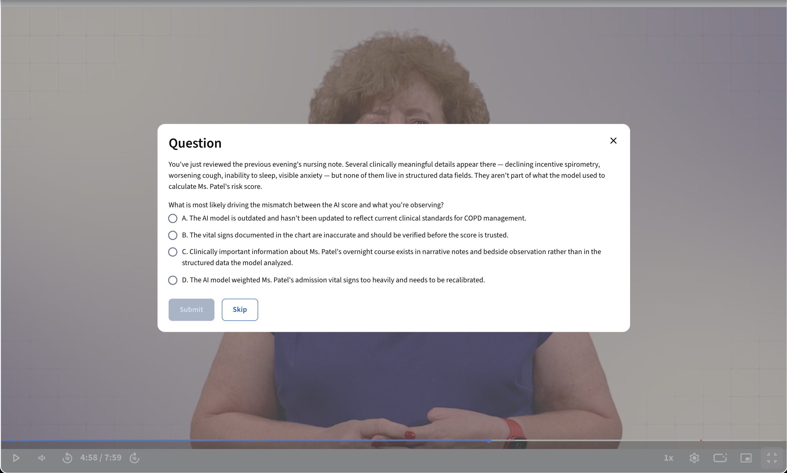

Project
AI for Nurses
A specialization built with Duke School of Nursing and Johnson & Johnson
What's it like to work with me as a learning designer and project manager? This project is a good example.
I start by learning how your world works
I'm not a nurse, and I've never worked in a clinical setting. When I enter a field I don't know, I begin by learning about the people who work in it: their environment, the pressures they're under, and the difference between what they've been given and what they actually need.
I also spend time understanding what the organization and its stakeholders need the project to accomplish, and when they need it. Good learning design has to account for both perspectives.
I ask questions before I start building
Duke School of Nursing and Johnson & Johnson needed nurses to build real fluency with the AI tools already showing up in their daily workflow. I started with the survey data already collected from working nurses, using it to figure out what they actually needed to know and be able to do.
From that, I proposed a three-course structure: seeing where AI shows up in nursing practice, evaluating what an AI tool is actually telling you, and applying that judgment in real clinical reasoning.
Course 1
Seeing AI in Nursing Practice
Course 2
Evaluating AI in Nursing Practice
Course 3
Applying AI in Nursing Practice
Before scoping the courses or setting a timeline, I brought the proposal back to the stakeholders, along with sample learning assets, and asked for their feedback and approval. Once approved, here was our timeline:
September 2026
Project kickoff
October – November 2026
LX needs analysis, early asset prototyping and feedback
December 2026
Script writing, editing, and feedback; SME studio preparation
January – February 2027
Media recording and video visual design
March 2027
Co-design session with nurses
April – May 2027
LX design for interactives, assessments, and supplemental materials
June 2027
Final build and learner pilot
July 2027
Final stakeholder review and sign-off, CEUs approved
August 2027
Launch
Learners are involved throughout
During this project, I brought registered nurses into the process repeatedly to test whether our decisions made sense in the context of their actual work.
In one co-design session, nurses described four ways AI was showing up during a shift: something was flagged, something was summarized, a list was reprioritized, or a protocol was triggered. That conversation both validated the direction we were taking and informed the structure of the courses. This framework now appears throughout the series. Here's what those four buckets looked like once we mapped them out for nurses:
Something is flagged
A score, alert, or Best Practice Advisory fires because the system detected a pattern.
Something is summarized
Text is constructed from documented information for a nurse to review.
Something is prioritized
A patient list is reordered or ranked by the system.
Something is triggered
A protocol, care plan, or checklist is initiated because a threshold was crossed.
Nurses return to this map throughout all three courses as new vocabulary connects back to a bucket they already recognize.
I'll show you how the pieces fit together
Courses 1 and 2 use a similar instructional structure, designed around one central question: how do you make technical AI concepts feel relevant to nurses who didn't sign up to become data scientists?
Layering. Each module starts with a subject-matter expert video introducing the concept in clinical language, not technical jargon. Then a Term Spotlight takes one term and makes it concrete, relatable, and written in the voice of a trusted nurse mentor.
Try it — predictive vs. generative AI
From there, an Inside the AI Tool interactive connects the concept to tools nurses already use, including MEWS, DAX Copilot, the Epic Sepsis Model, and the Braden Scale. The goal is for nurses to leave the module with more than a definition, they should recognize that concept in the systems and workflows they encounter at work.
Try it — features vs. labels
We also built in practice assessments as low-stakes checkpoints before the graded work. Each course ends with a Dialogue activity, where nurses bring in a tool from their own practice and work through the course concepts in an AI-powered conversation. Then a graded final assessment confirms they've met the learning goals before the Course Certificate is issued.
Where Courses 1 and 2 build the knowledge and the lens, Course 3 asks what happens when nurses actually have to use them in practice. Course 3 is structured around five guided case studies. Each case starts with a pre-reading that sets up the clinical situation, then a video with pause points where nurses have to make a judgment before seeing what happens next, a graded quiz, and a post-case reflection with a completed template.
From the actual course — case study with pause point

Each activity has a specific role and prepares learners for the next step: from concept, to tool, to personal application, to clinical judgment. This progression is what makes the learning relevant to the work nurses are actually doing.
Where are we now
The specialization launched on schedule. The response from Duke School of Nursing and Johnson & Johnson was strong enough that they funded a second year of work together.
A new specialization is already scoped and scheduled to begin within the month. It's a different project with its own challenges, but it exists because the first one built enough trust to continue the partnership.